| 心理学のためのサンプルサイズ設計入門 |
| 心理学のためのサンプルサイズ設計入門 |
1群の母平均のCIは
| 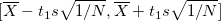 | (3.1) |
なので、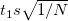 がCIの半幅1。
ここで、 をデータ分布のSD 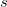 の何倍に抑えたいか考える。 すると、
| 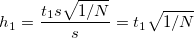 | (3.2) |
を一定の値 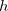 以下にするような 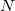 を求めればよい。
つまり、
| 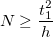 | (3.3) |
をみたす最小の が求めるサンプルサイズとなる。
メモ
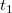 にも自由度として が含まれているので、探索的に解く必要がある。
メモここまで
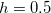 が一つの目安。
相対評価では 1SD 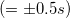 を区切りの目安としていた
をあまりに小さくすると、実質的に同等のものを異なるものとして主張しかねない
2群の平均値差については、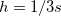 までの違いは同等とみなすことが多い □ 要チェック
母集団平均について、帰無仮説 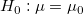 を考えたとき、
![\[ \mid \overline{X} - \mu _0 \mid < 0.5 s \Leftrightarrow \frac{\mid \overline{X} - \mu _0 \mid }{s} < 0.5 \]](images/img-0028.png) |
であれば、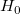 は棄却されない。
平均値差のCIは、
| 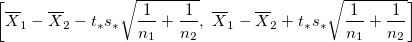 | (3.4) |
である。 ここで、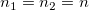, 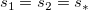 と仮定すると2、
| 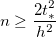 | (3.6) |
によってサンプルサイズを決定できる。
メモ
CI の半幅は
なので、これを 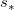 の何倍に抑えたいか考えるとすると、
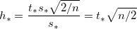 となる。 これを
について解けばよい。
メモここまで
はてな？
分散について、母集団値を 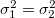 とおくのは仮定の話なので納得できるが、現実に得られるデータについて 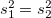 とおくのは無理があるのでは。
本文では、等分散が仮定できないときは大きい方の SD にもとづいて を決めるとある。しかし、そもそも等分散でなくても、 を基準に考えているのであれば式 (3.6) は成り立つはず。
はてな？ここまで
母集団平均の差について帰無仮説 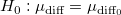 を考えたとき、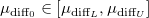 であれば棄却されない。 つまり、
| 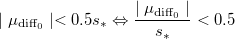 |
であれば、 は棄却されない。
メモ
要は、平均値差のCIの下限と上限と標本平均との比が 0.5 に収まるようなサンプルサイズを決定するということ。
メモここまで
平均値差のCIは、
| 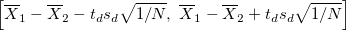 | (3.7) |
である。 2群の標本分散について 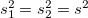 と仮定すると、
| 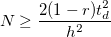 | (3.9) |
を満たす最小のが、CIの半幅のに対する割合にもとづくサンプルサイズ。 2群の相関係数 が小さいほど必要なは大きくなる3。
が小さいほど必要なは大きくなる3。
メモ
CIの半幅は 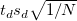 なので、これをの何倍に抑えたいか考えると、
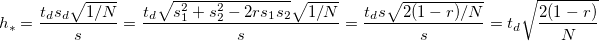 となる。 これをについて解けばよい。
メモここまで
メモ
基本は対応のない2群と同じ。平均値差のCIの下限と上限と標本平均との比が0.5に収まるようなサンプルサイズを決定することになる。
メモここまで
はてな？
CIの半幅と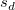との比をもとにを決定することもできる。その場合、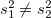 であってもよい。ただし、「群内のSDで標準化された平均値差」としての効果量ではなくなるので、の意味はより不明確になる。
はてな？ここまで
変換 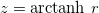 を考えたとき、のCIは
| 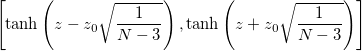 | (3.10) |
となる。 このCIはを中心に非対称であるので、CIの半幅はCI幅の1/2と考え、
| 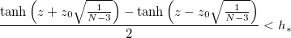 |
を考える。 これを解くことで、必要なが得られる。
Footnotes
| 心理学のためのサンプルサイズ設計入門 |